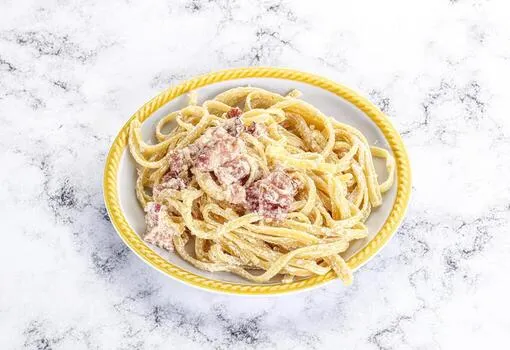

Pasta Carbonara

Description
Pasta Carbonara is a classic Italian dish from Rome. It's creamy, simple, and absolutely delicious. Made with just a few ingredients, this pasta is ready in about 25 minutes. Perfect for a quick weeknight dinner!
Ingredients
- 400g Spaghetti or Penne pasta
- 200g Bacon or Pancetta, diced
- 3 Egg yolks
- 100g Parmesan cheese, grated
- 50g Pecorino Romano cheese, grated
- 2 cloves Garlic, minced
- Salt and Black pepper to taste
- Fresh Parsley (optional)
Instructions
- Cook the pasta: Boil water in a large pot with salt. Add pasta and cook until al dente (about 9-10 minutes). Reserve 1 cup of pasta water before draining.
- Prepare the sauce: In a bowl, whisk together egg yolks, Parmesan, and Pecorino Romano cheese. Season with black pepper.
- Cook the bacon: In a large skillet, cook diced bacon over medium heat until crispy (about 5-7 minutes). Add minced garlic and cook for 1 minute.
- Combine: Add hot pasta to the bacon and garlic. Remove from heat. Pour the egg mixture over the pasta while tossing constantly. Add pasta water as needed to create a creamy sauce.
- Serve: Divide into plates and serve immediately. Garnish with extra cheese and fresh parsley if desired.
💡 Tips
- Do not use whole eggs - the heat might scramble them. Use only yolks for best results.
- Add pasta water gradually to get the right creamy consistency.
- Pecorino Romano has a stronger flavor - adjust amount to taste.
- Pancetta is more authentic than bacon, but both work well.
- Work quickly after adding the egg mixture to prevent scrambling.